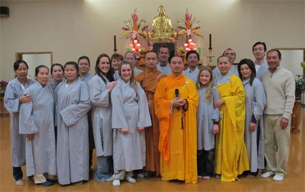

.svg.png)

Donate or Sponsor Our Temple
Online Donations

Donate button temporarily out of order.
Click the button above to make your contribution. All online contributions are securely handled through PayPal.
Donation Form
You can print this donation form, available as either a PDF or Word Document, and mail it in:
Our mailing address:
Dinh Quang Temple
2901 W High St.
Springfield, MO 65803
Make checks payable to "Dinh Quang Temple".
Donations in Person
Donations can be left outside in the large box in front of our beautiful statue.
If you made a donation, Venerable Thay thanks you humbly. As a way to say thank you, you can place an ad on our page to advertise your business or web site.
Why sponsor or donate to Dinh Quang Buddhist Temple?
It is said that if there is no teacher there are no teachings. If there are no teachings, nobody can
know the Buddha. This is the triple gem of taking refuge in the Buddha, Dharma (teachings) and Sangha (teachers).
Dinh Quang was created solely to benefit others in the Springfield Missouri area with the Buddhas teachings. The
only way Venerable Thay can achieve that goal is through support of the lay community. Without support this important
cultural gem could disappear.
Your tax deductible donations go directly towards the immediate needs of the temple which include utilities, paying
for the lease, food and necessities for our monks. Dinh Quang Buddhist Temple is a non-profit 501 (c) (3) organization.
There are many merits involved in donating to the Sangha. If you wish you can dedicate your donation to your loved
ones, city, country or all sentient beings. To read about Dana (giving) and what the results are click here.